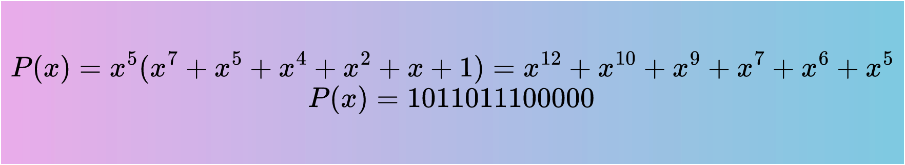
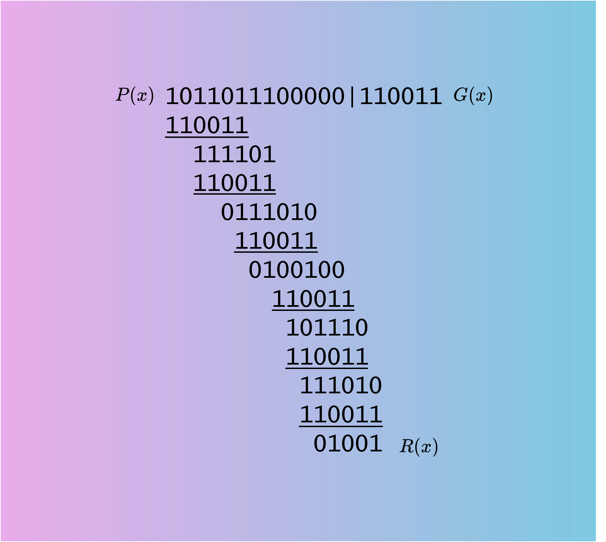
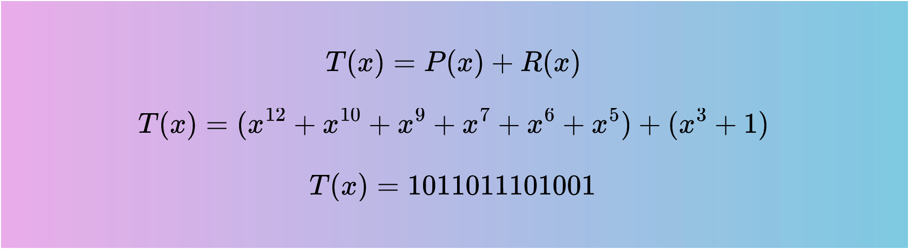
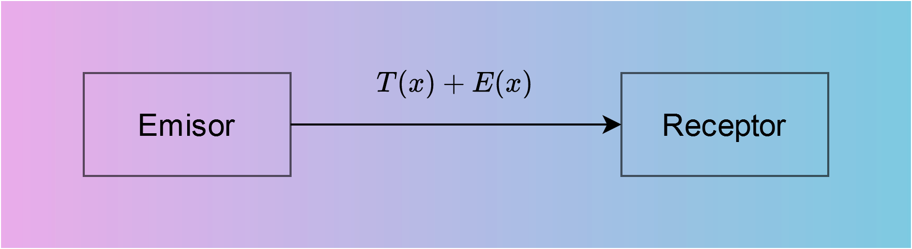
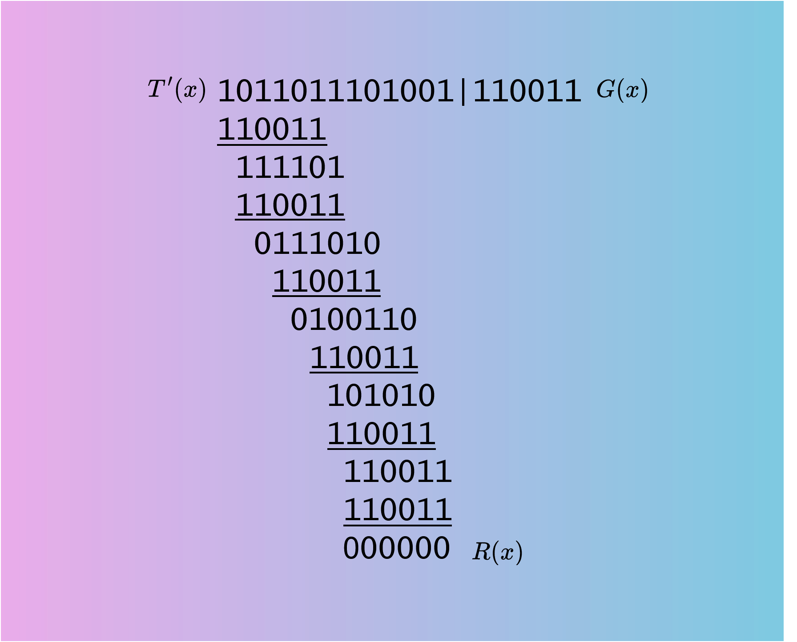

Teoría CRC
Concepto
El método se basa en la detección de errores por medio de operaciones aritméticas con polinomios que utilizan la técnica conocida como de módulo 2, en la que no hay términos de acarreo para la suma, ni de préstamo para la resta. Estas operaciones son realizadas con circuitos digitales convencionales que ejecutan la función OR EXCLUSIVA.
Algoritmo
- Definimos un polinomio M(x) de grado n con los bits del mensaje a transmitir
- Definimos un polinomio G(x) de grado r (generador)
- Definimos un polinomio auxiliar de valor Xr más alto que tenga G(x). El grado n del polinomio M(x) debe ser: n>>r
- Se forma un nuevo polinomio que contenga (r+n) bits, de la forma P(x)=Xr.M(x) 
- Se divide el nuevo polinomio formado P(x) por el polinomio generador G(x). De dicha división se obtendrá un polinomio resto R(x) que siempre debe tener un número de bits menor o igual que r 
- Finalmente, se procede a obtener un polinomio que denominaremos: T(x)=P(x)+R(x), que es el polinomio a transmitir 
- Se transmite T(x) y se recibe T'(x)=T(x)+E(x), donde E(x) sería el error provocado por el canal 
- Finalmente en el receptor se realiza la operación T'(x)/G(x) y se obtendrá un R(x). Si R(x)=0 no hay error, caso contrario, los datos recibidos poseen error 
- Ya entendí, ahora vamos a calcular!